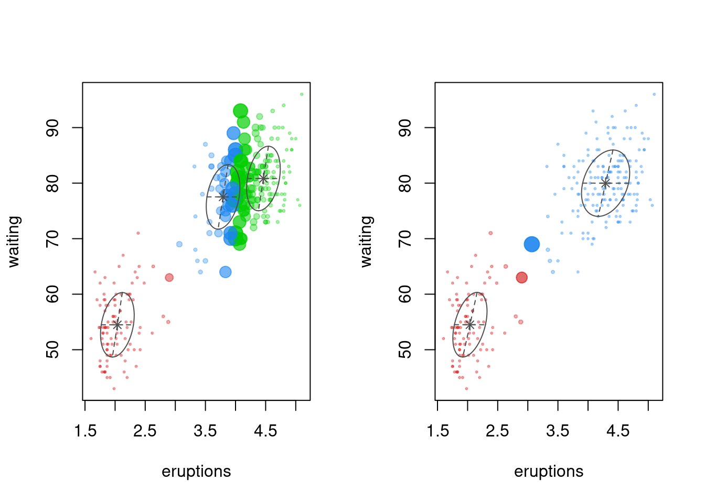
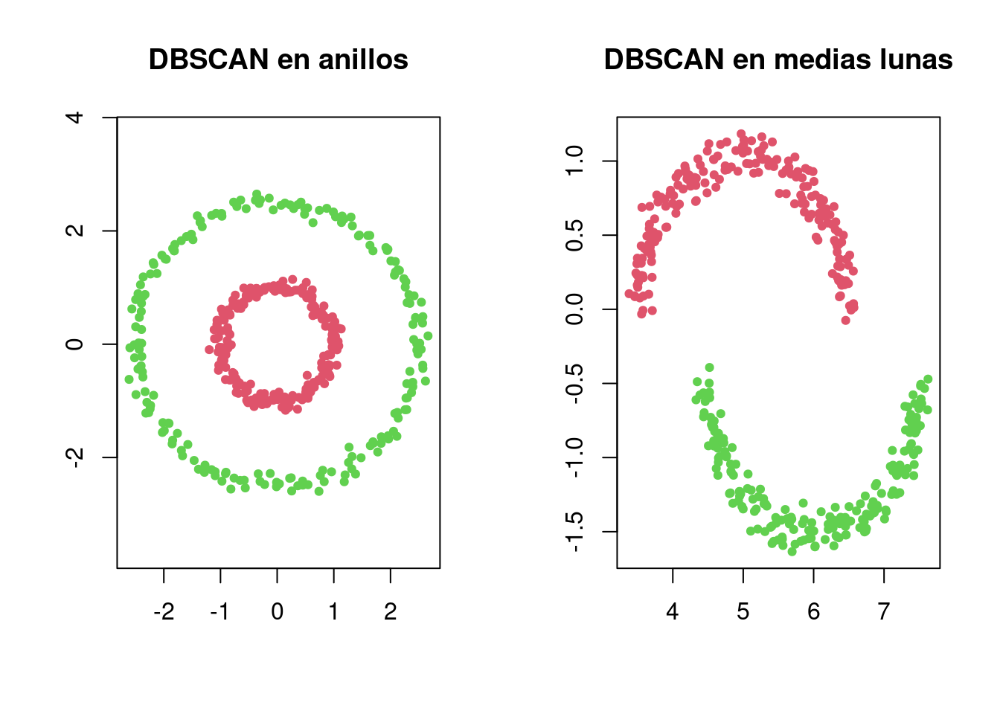
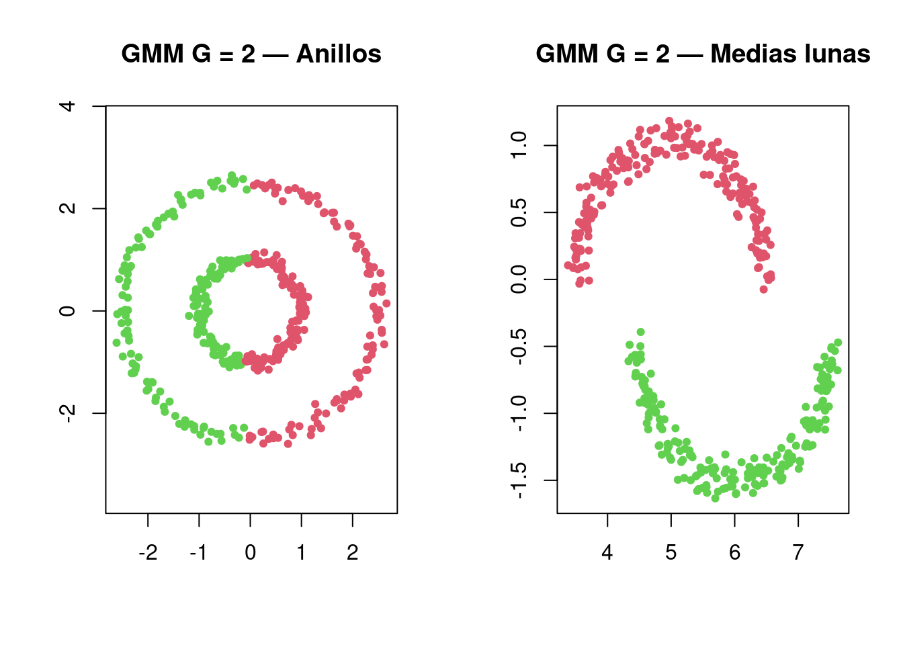

Package 'mclust' version 6.1.2
Type 'citation("mclust")' for citing this R package in publications.
library(dbscan)
Adjuntando el paquete: 'dbscan'
The following object is masked from 'package:stats':
as.dendrogram
library(MASS)set.seed(42)
Resumen
Hasta ahora veníamos usando métodos que forman grupos de distintas maneras.
K-means piensa los grupos como puntos alrededor de un centroide. Funciona bien cuando los grupos son compactos, más o menos redondeados y de tamaño parecido.
Las mixturas gaussianas, o GMM, dan un paso más. En vez de pensar cada grupo como puntos alrededor de un centro, piensan cada grupo como una nube gaussiana. Eso permite grupos elípticos, con distinta dispersión y orientación. Además, GMM no solo asigna una observación a un grupo: también dice con qué probabilidad pertenece a cada componente.
DBSCAN cambia la lógica. No busca centros ni gaussianas. Busca zonas densas conectadas. En esta mirada, un grupo es como un cuerpo formado por puntos cercanos. Los puntos que quedan aislados no se fuerzan dentro de un grupo: quedan como ruido.
OPTICS continúa esa idea de densidad, pero evita depender tanto de un único valor fijo de eps. En vez de devolver directamente una partición, construye un gráfico de alcanzabilidad que muestra la estructura de densidades. Después podemos cortar ese gráfico para extraer grupos.
La idea general queda así:
k-means -> grupos alrededor de centroides
GMM -> grupos como nubes gaussianas
DBSCAN -> grupos como zonas densas conectadas
OPTICS -> mapa de estructura de densidades
La pregunta no es cuál método es mejor en abstracto. La pregunta es qué idea de grupo se ajusta mejor a la forma de los datos.
1. GMM — Mixturas Gaussianas
1.1 Idea básica
Un GMM modela cada grupo como una distribución gaussiana multivariada.
En dos dimensiones, podemos imaginar cada componente como una nube o una elipse. Cada componente tiene su propia media, su propia dispersión y, según el modelo, su propia forma.
La ventaja frente a k-means es que GMM no devuelve solo una etiqueta de grupo. También devuelve probabilidades de pertenencia. Eso permite mirar qué observaciones están claramente asignadas y cuáles están en zonas dudosas.
1.2 Ejemplo con faithful
El dataset faithful tiene datos del géiser Old Faithful. Usa dos variables:
eruptions: duración de la erupción.
waiting: tiempo de espera hasta la próxima erupción.
Las filas representan la cantidad de componentes y las columnas representan distintos modelos de forma/covarianza.
Nombres como EEE, VEV o VVV describen la forma de las nubes gaussianas.
1ª letra -> volumen / tamaño
2ª letra -> forma
3ª letra -> orientación
E = igual entre grupos
V = variable entre grupos
I = esférico / sin orientación especial
Por ejemplo:
EEE -> grupos elipsoidales con tamaño, forma y orientación iguales
VVV -> grupos elipsoidales con tamaño, forma y orientación variables
EII -> grupos esféricos de igual tamaño
1.4 ICL
ICL es parecido a BIC, pero penaliza más la incertidumbre de clasificación.
Una forma simple de pensarlo:
BIC -> buen ajuste, sin demasiada complejidad
ICL -> buen ajuste, pero además grupos más claros
Estas observaciones no necesariamente están mal clasificadas. Simplemente están en zonas donde dos componentes se solapan o donde el modelo no tiene una asignación clara.
1.8 Comparación BIC vs ICL
par(mfrow =c(1, 2))plot(gmm_faithful, what ="uncertainty")plot(gmm_faithful_icl, what ="uncertainty")

par(mfrow =c(1, 1))
ICL suele favorecer soluciones con menor solapamiento. Por eso puede mostrar menor incertidumbre, aunque use menos componentes.
2. GMM con Iris
Con iris tenemos una ventaja: conocemos la especie real de cada flor.
Esto permite preguntar:
¿Los grupos estimados por GMM se parecen a las especies reales?
----------------------------------------------------
Gaussian finite mixture model fitted by EM algorithm
----------------------------------------------------
Mclust VEV (ellipsoidal, equal shape) model with 2 components:
log-likelihood n df BIC ICL
-215.726 150 26 -561.7285 -561.7289
Clustering table:
1 2
50 100
En este caso, el modelo automático puede resumir los datos en 2 componentes: uno separa setosa, y el otro agrupa versicolor + virginica.
Eso no significa que Iris “tenga dos especies”. Significa que, según el criterio del modelo, la estructura gaussiana de las variables se resume mejor así.
2.1 Forzar G = 3
Como sabemos que Iris tiene 3 especies, podemos forzar un modelo con 3 componentes para comparar.
gmm_iris3 <-Mclust(X_iris, G =3)summary(gmm_iris3)
----------------------------------------------------
Gaussian finite mixture model fitted by EM algorithm
----------------------------------------------------
Mclust VEV (ellipsoidal, equal shape) model with 3 components:
log-likelihood n df BIC ICL
-186.074 150 38 -562.5522 -566.4673
Clustering table:
1 2 3
50 45 55
Con 3 componentes, la proyección muestra una estructura más cercana a las tres especies. Aun así, este modelo fue forzado: no fue necesariamente el preferido por BIC.
2.3 Comparar GMM con k-means
Ahora comparamos si GMM y k-means agrupan las flores de forma parecida.
ARI = 1 -> coincidencia perfecta
ARI = 0 -> coincidencia similar al azar
3. DBSCAN — grupos por densidad
3.1 Idea básica
DBSCAN cambia la lógica. No busca centroides ni gaussianas.
Busca zonas densas conectadas.
Tiene dos parámetros principales:
eps -> radio de vecindad
minPts -> cantidad mínima de puntos dentro de ese radio
Un punto núcleo es un punto que tiene al menos minPts puntos dentro del radio eps.
Los clusters se forman conectando puntos núcleo y puntos de borde. Los puntos que no quedan conectados a ninguna zona densa se etiquetan como ruido.
En dbscan(), el ruido aparece como cluster 0.
La analogía que usamos:
puntos = átomos
eps = volumen local que miro
minPts = cantidad mínima de átomos para formar cuerpo
zona densa conectada = grupo / cuerpo
puntos aislados = ruido / aire
par(mfrow =c(1, 2))plot(anillos, col = db_anillos$cluster +1, pch =19, cex =0.7, asp =1,main ="DBSCAN en anillos", xlab ="", ylab ="")plot(lunas, col = db_lunas$cluster +1, pch =19, cex =0.7,main ="DBSCAN en medias lunas", xlab ="", ylab ="")

par(mfrow =c(1, 1))
table(db_anillos$cluster)
1 2
200 200
table(db_lunas$cluster)
1 2
200 200
Los valores de eps no son universales. Dependen de la escala y densidad de los datos. En esta primera lectura conviene ajustarlos manualmente para ver el efecto conceptual.
3.5 Comparación con GMM
gmm_anillos <-Mclust(anillos, G =2)gmm_lunas <-Mclust(lunas, G =2)par(mfrow =c(1, 2))plot(anillos, col = gmm_anillos$classification +1, pch =19, cex =0.7, asp =1,main ="GMM G = 2 — Anillos", xlab ="", ylab ="")plot(lunas, col = gmm_lunas$classification +1, pch =19, cex =0.7,main ="GMM G = 2 — Medias lunas", xlab ="", ylab ="")

par(mfrow =c(1, 1))
En los anillos, GMM puede fallar de forma parecida a k-means: corta la estructura en regiones, pero no recupera anillo interno vs. anillo externo.
En las medias lunas, GMM puede funcionar bien. En este ejemplo, incluso resulta más simple que DBSCAN porque solo indicamos G = 2. Esto muestra que no hay un método mejor en abstracto. Cada método trae una idea distinta de qué es un grupo.
3.6 Puntos núcleo
Esta parte desarma DBSCAN por dentro.
Un punto es núcleo si tiene al menos minPts vecinos dentro del radio eps.
Esto no es necesario para correr DBSCAN, pero ayuda a entender cómo decide dónde hay densidad.
4. OPTICS
4.1 Idea básica
OPTICS es una extensión de DBSCAN.
DBSCAN usa un único eps. Eso puede ser un problema cuando hay zonas de distinta densidad.
OPTICS no devuelve primero una partición fija. Construye un ordenamiento de los puntos y un gráfico de alcanzabilidad.
En el reachability plot:
barras bajas -> puntos fáciles de alcanzar -> zonas densas
barras altas -> puntos difíciles de alcanzar -> zonas dispersas o separación
valles -> posibles clusters
picos -> separación o ruido
No es un gráfico de densidad directa. Es un gráfico de distancia de alcanzabilidad. Por eso lo denso aparece abajo.
4.2 Datos con distinta densidad
X_dens <-rbind(mvrnorm(60, mu =c(0, 0), Sigma =diag(0.1, 2)),mvrnorm(40, mu =c(5, 0), Sigma =diag(1.0, 2)))plot(X_dens,pch =19,cex =0.7,col ="steelblue",main ="Datos con distinta densidad",xlab ="",ylab ="")
Para una primera lectura, eps_cl es más fácil de entender porque se ve como un corte horizontal. xi puede quedar como opción automática complementaria.
5. Complementario: crabs
Con datos reales, DBSCAN y OPTICS requieren más decisiones: selección de variables, escalado, valores de eps y minPts, y una interpretación más cuidadosa.
Por eso esta sección queda como exploración complementaria.
k-means:
- simple y útil
- necesita k
- funciona mejor con grupos compactos
GMM:
- modela grupos como gaussianas
- permite elipses e incertidumbre
- usa BIC/ICL para comparar modelos
DBSCAN:
- agrupa por densidad conectada
- no necesita k
- detecta ruido
- depende de eps y minPts
OPTICS:
- explora estructura de densidades
- útil cuando hay densidades distintas
- usa reachability plot y cortes posteriores
La idea importante no es memorizar comandos, sino reconocer qué entiende cada método por “grupo”.